2.1 模型思维
查理•芒格:
长久以来,我坚信存在某个系统—几乎所有人都能掌握的系统,它在你的头脑里形成一种思维模型
的框架。有了那个系统之后,你就能逐渐提高对事物的认识。
If all you have is a hammer, everything looks like a nail.
你必须知道重要学科的重要原理,并经常使用它们—要全部都用上,而不是只用几种。
本文包括与人生关键能力相关的八大思维模型: 学习、思考、创作、设计、共情、演讲、整合、领导
一、学习能力
1. 学习金字塔
学习金字塔是美国缅因州的国家训练实验室研究成果,它用数字形式形象显示了:采用不同的学习方式,
学习者在两周以后还能记住内容(平均学习保持率)的多少。
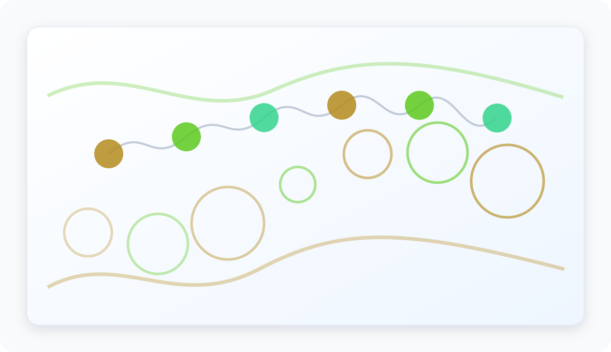
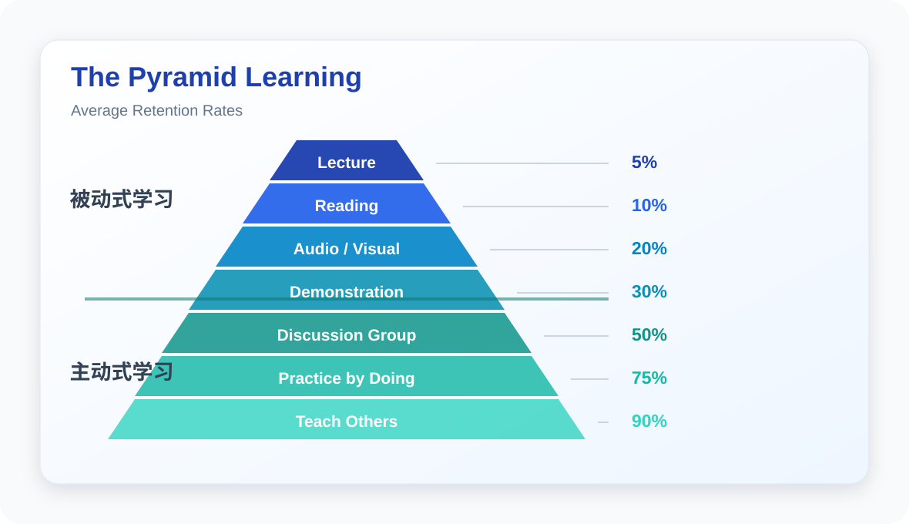
2. 费曼学习法
What i cannot create i do not understand.
Know how to solve every problem that has been solved. — Feynman
号称 史上最强学习方法,其核心是通过教别人的方式让自己学会,这也是 学习金字塔 中最高效的一种方式。核心:
输出的过程,后⻅之明到先⻅之明悟。无论学习什么东⻄,都要努力的琢磨它们究竟在讲什么,它们的实际意义
是什么,然后有自己的话讲其讲出来。通过自己的语言,用最简单的话把一件事情讲清楚,最好让外人也能听懂。
能用简单的语言就不用复杂的语言。学到什么说不清=慢性自杀。30s电梯
克劳瑞思:费曼学习法 / 费曼技巧 FEYNMAN TECHNIQUE
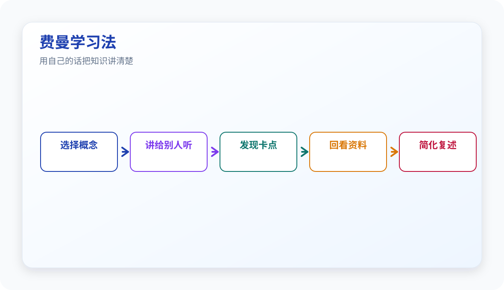
3. 刻意练习 | 知行合一的实践方式
刻意练习是一种提升技能和能力的有效训练方法,由安德斯 艾力克森在《刻意练习》一书中提出。
他的特点是在学习区练习,精神高度集中,大量重复训练,持续获得有效的反馈,不断调整训练。
3F原则: focus & feedback & fix it
feedback 动作的调整 & 反思(我是如何学会上个知识的)
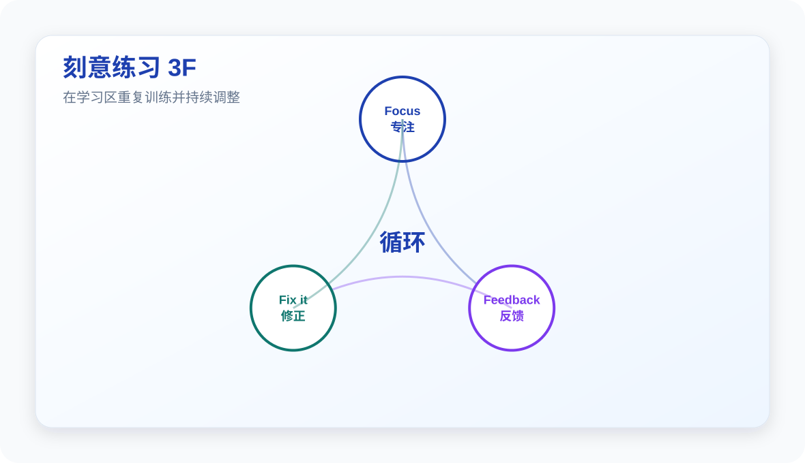
4. 康奈尔笔记法
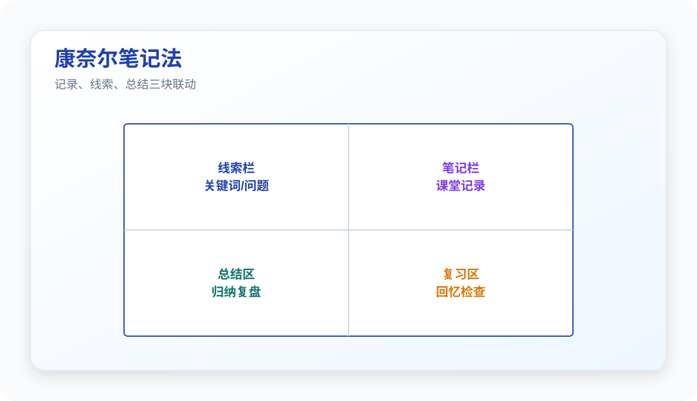
5. RIA阅读法
核心是把书里的知识进行拆解,达到学以致用的目的, 出自《这样读书就够了》
RIA便签学习法⸺一种主动式学习。
1.Read,阅读原文片段
2.Interpretation 用自己的语言复述阅读的知识, 目标:通过复述达到理解知识本身是什么的程度。
3.Appropriation 化为己用
a.建立新知识和已有知识的联系
a.写下这个知识可能的应用场景
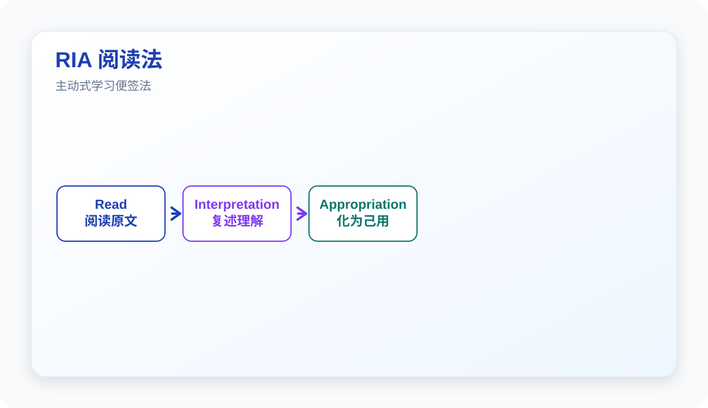
SQ3R(Survey,Question,Read,Recite,Review),分别代表 浏览、发问、阅读、复述、复习 五个学习阶段。
这种读书方法是由美国依阿华大学的罗宾森提出的。该方法创用后,极受推崇。
其要点是:浏览该阶段应特别关注书的序(或前言)、内容提要、目录、正文中的大小标题、图、表、照片,以及注
释、参考文献和索引等,以便对全书有一个总的直觉印象。这不仅可获得对全书框架的大体了解,还可以把自己原先已
掌握的有关知识与经验调动起来,为进一步阅读提供基础。
感性读书: 哪些内容印象深刻,这句话对你的帮助是什么? 这句话是不是正确的? 会不会让你陷入傲慢、偏⻅的境地?
6. 二八定律
由19世纪末20世纪初意大利经济学家巴莱多发现,又称帕累托定律。他认为,在任何一组东⻄中,最重要的只占其中一
小部分,约20%,其余80%尽管是多数,却是次要的。体现了事务的不平衡,抓住主要问题,解决主要矛盾。
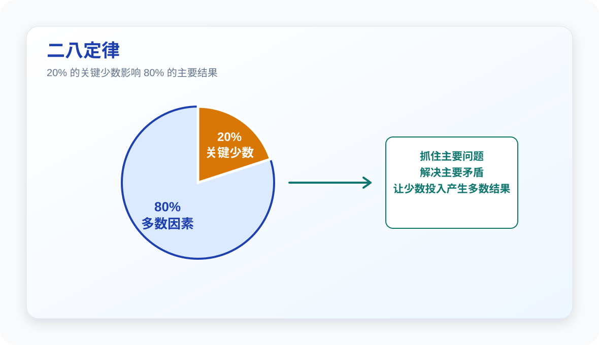
二、思考能力
1. ⻩金圈法则(The Golden Circle)
思考与沟通时需要分清楚why how what。
why 为什么做 动机
how 怎么做
what 做什么 或 目标
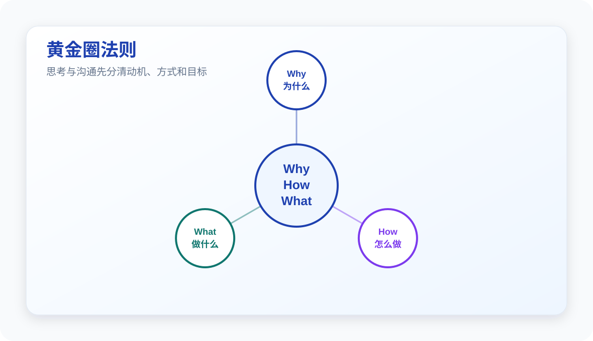
自我决定理论中将动机分为内在动机和外在动机。关注内部价值,注意内在动机,构建内在秩序,享受事情过程本身。
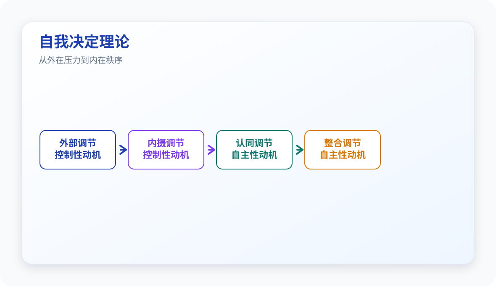
在4种动机中,外部调节和内摄调节主要是受控制的状态,个体更多的是迫于外界的压力而行动,被称为控制性动机。
在认同调节和整合调节中,自我决定的成分较多,因而被称为自主性动机。
2. 5W1H分析法
5W1H分析法是一种实用的思考方法。它指对选定的对象从原因(why)、对象(what)、地点(where)、时间
(when)、人员(who)、方法(how)六个方面出问题进行思考,实际上很多时候还可以增加一个How much,用于
定义做到上面程度是优质,即衡量产出,变成5W2H。
什么是5W1H分析法, 如何使用5W1H六何分析法?
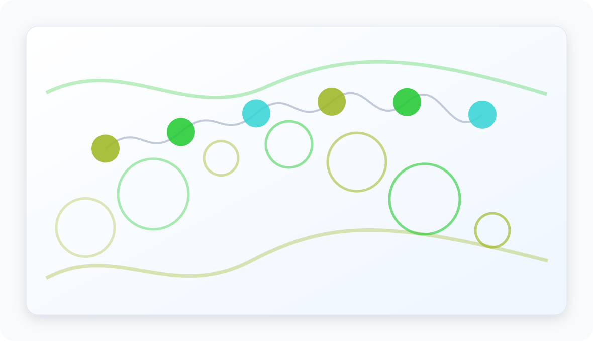
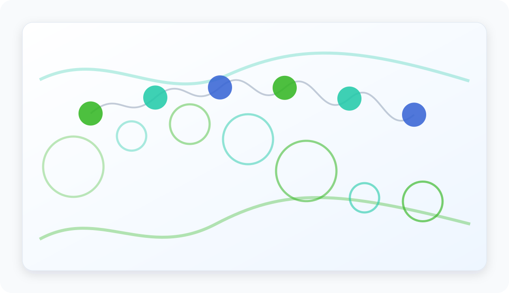
3. 思维导图
思维导图是一种表达发散思维的可视化工具。它用一个中央关键词或想法以辐射线形连接所有的代表字词、想法、任务
或其它关联项目的图解方式。把画在中央的主题逐渐细分的过程,帮助大家从不同⻆度透彻地分析一个主题。
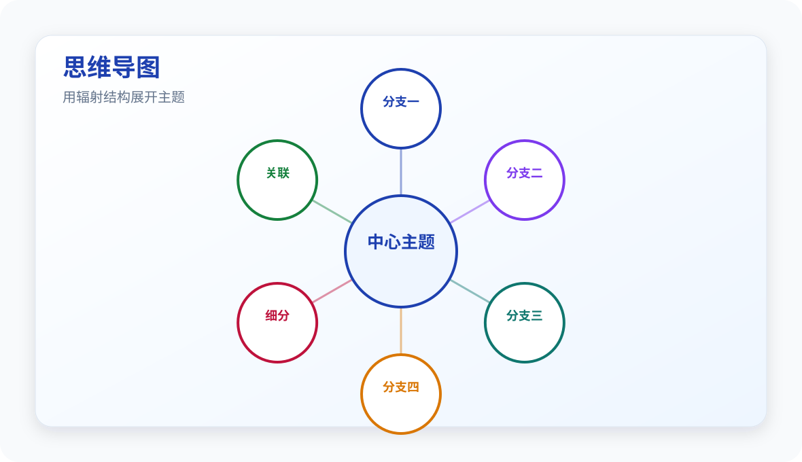
4. SWOT分析
来自⻨肯锡的战略分析工具,分析自身的优势劣势及外部环境的机会和威胁,以便找到行动方向。
经常被各种分析报告作为初级的分析思路使用。SWOT 分析:找到竞争优势的简单方法
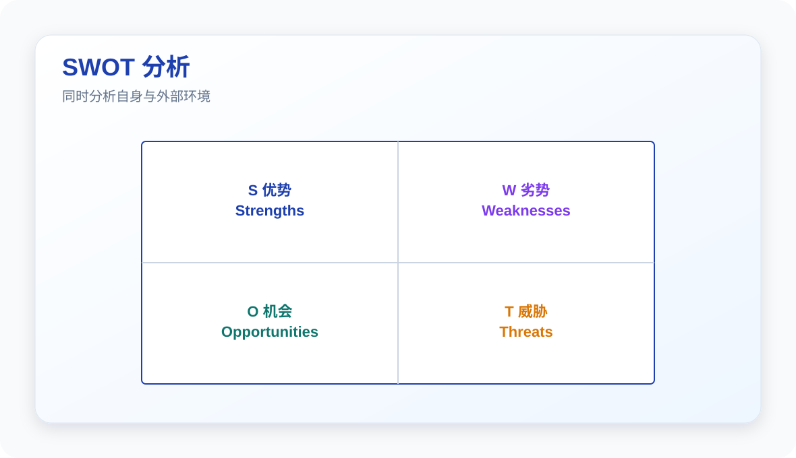
5. 10/10/10法则
10/10/10法则来自巴菲特,它可以帮助我们用⻓远的目光做出明智的选择。
决策时需要记住3个问题:10分钟、10个月、10年后,我会怎么看待这个决定?
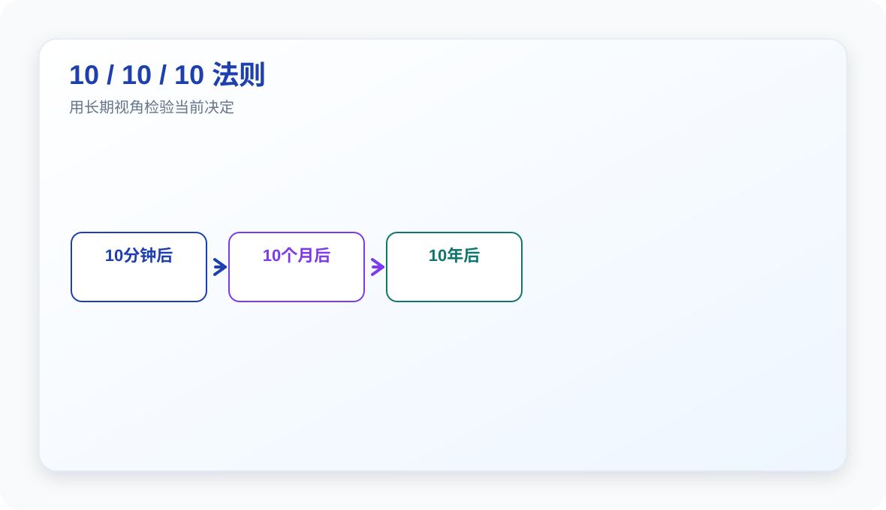
6. 冰山模型
透过现象看本质
1895年,心理学家弗洛伊德与布罗伊尔合作发表《歇斯底里研究》,弗洛伊德著名的 冰山理论 也就传布于世。在弗洛
伊德的人格理论中,他认为人的心理分为超我、自我、本我三部分。1973年美国心理学家⻨克利兰提出,就是将人员个
体素质的不同表现表式划分为表面的 冰山以上部分和深藏的 冰山以下部分。
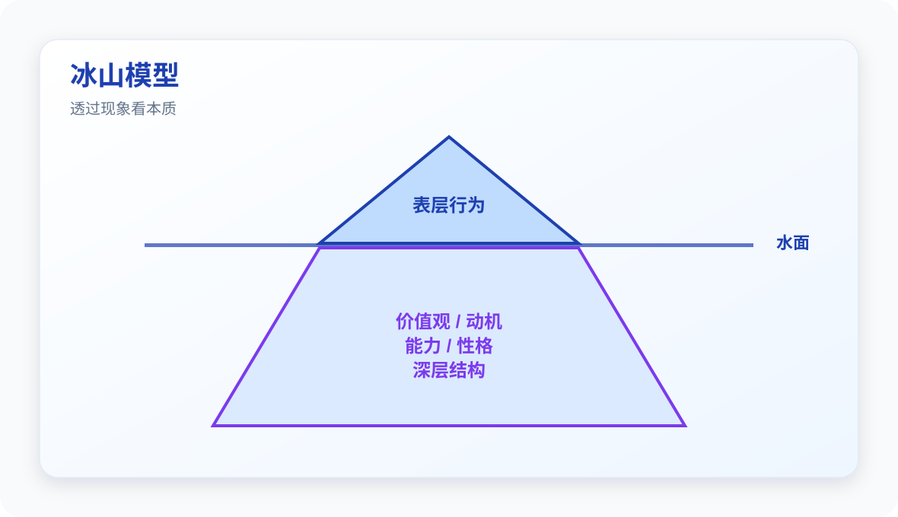
三、创造能力
1. 六顶思考帽
均衡发展缺失的思维特质,应用上凡重大决策,要戴就戴全,一次戴一顶,顺序不固定。
蓝色: 冷静,全局分析,做出安排。前期负责帽子的排序和使用次数,中期控制思考深度和时间,后期推出结论,蓝
帽不参与讨论
白色: 客观,区分观点和事实,不要评价,不要划重点
绿色: 生机,无论对错是非,方案需要有爆发力,给其他帽启发和启发
红色: 热情,发表主观感受,尽情释放情绪
⻩色: 肯定,寻找价值,建设性观点,对前面的帽子做乐观的评价
黑色: 保守,否定/怀疑负面意⻅,必须合乎情理,有理有据,不必提出解决方案
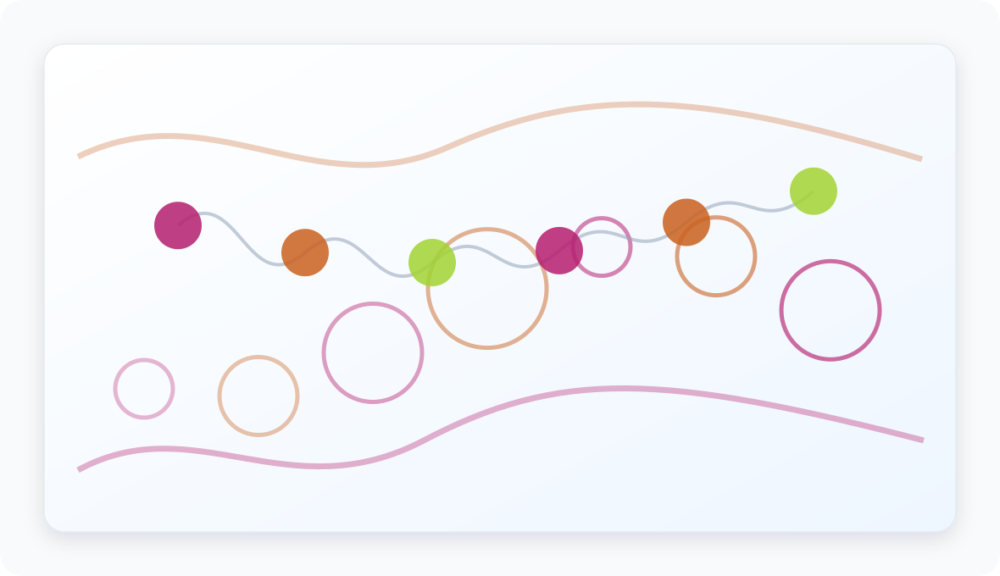
可以在方案评估&复盘时使用。
2. 头脑⻛暴
由美国BBDO广告公司的奥斯本提出,该方法主要由价值工程工作小组人员在正常融洽和不受任何限制的气氛中以会议
形式进行讨论、座谈,打破常规,积极思考,畅所欲言,充分发表看法。
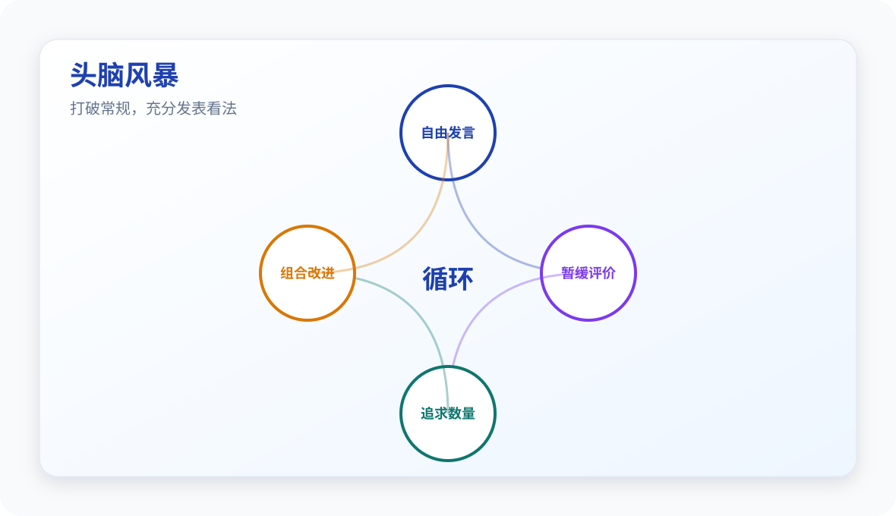
3. 逆向思维
逆向思维,也称求异思维,它是对司空⻅惯的似乎已成定论的事物或观点反过来思考的一种思维方式。
反其道而思之,让思维向对立面的方向发展,从问题的相反面深入地进行探索,树立新思想,创立新形象。
我要怎样才能助他人? ,与之相反的问题应该问:我要怎样才能伤害他人?
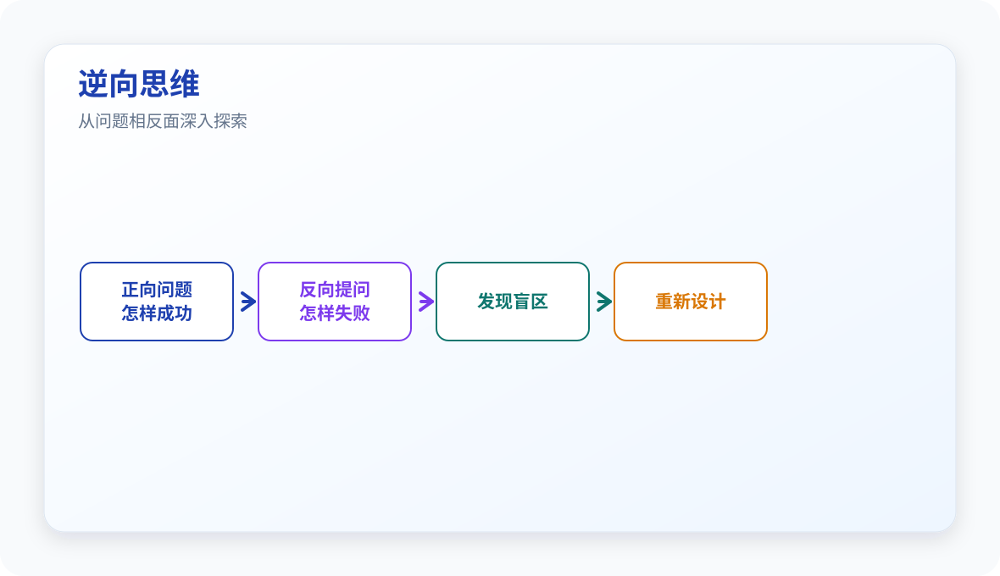
4. 类比思维
类比思维是根据两个具有相同或相似特征的事物间的对比,从某一事物的某些已知特征,去推测另一事物的相应特征存
在的思维活动。讲述一件事时,可以使用。但还是推从第一性原理。
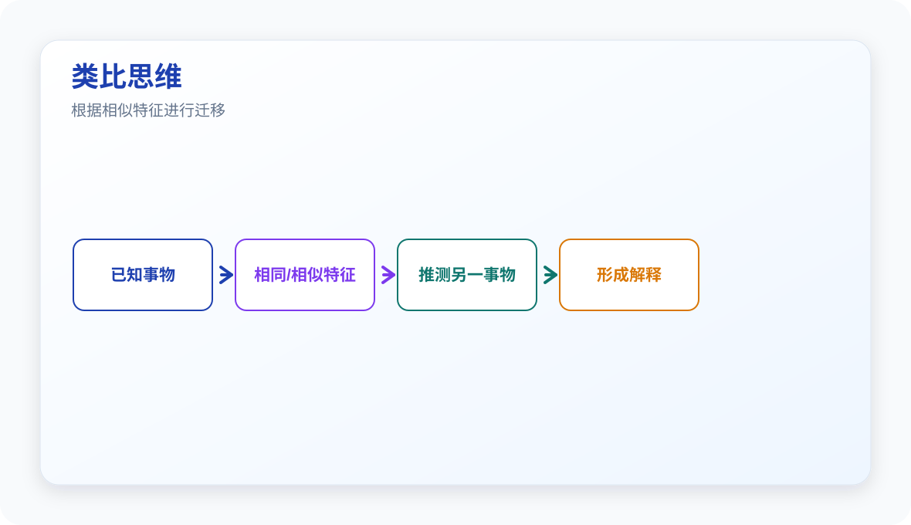
5. SCAMPER创新思维
SCAMPER是一种创新思维方法,常用在改进现有产品、服务或商业模式中,由美国心理学家罗伯特 艾伯尔创作
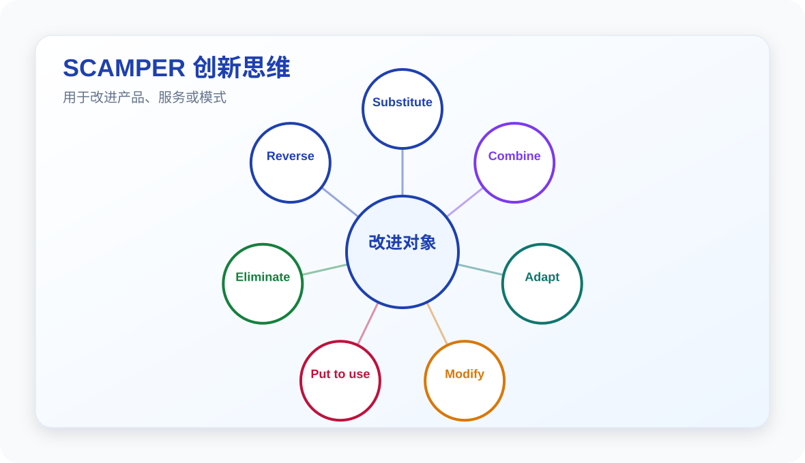
四、设计能力
1.设计思维
设计思维是一套以人为本的解决问题的方法论,从人的需求出发,多⻆度寻求创新解决方案,创造更多可能性。
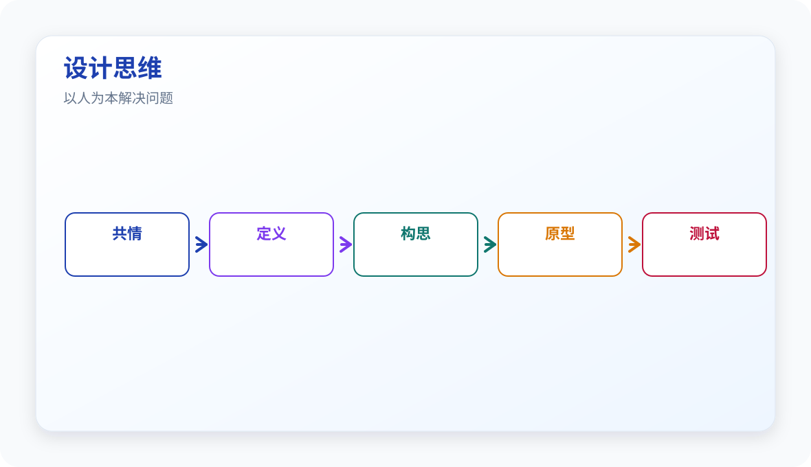
2. 最小可行性产品(MVP)
最小可行产品(Minimum ViabIe product,简称MVP)的概念由Eric Ries在《精益创业实战》中提出,
指产品经理可以用最快、最筒明的方式建立一个可用的产品原型,推向布场,测试用户是否喜欢这个产品,进而迭代完
善细节。
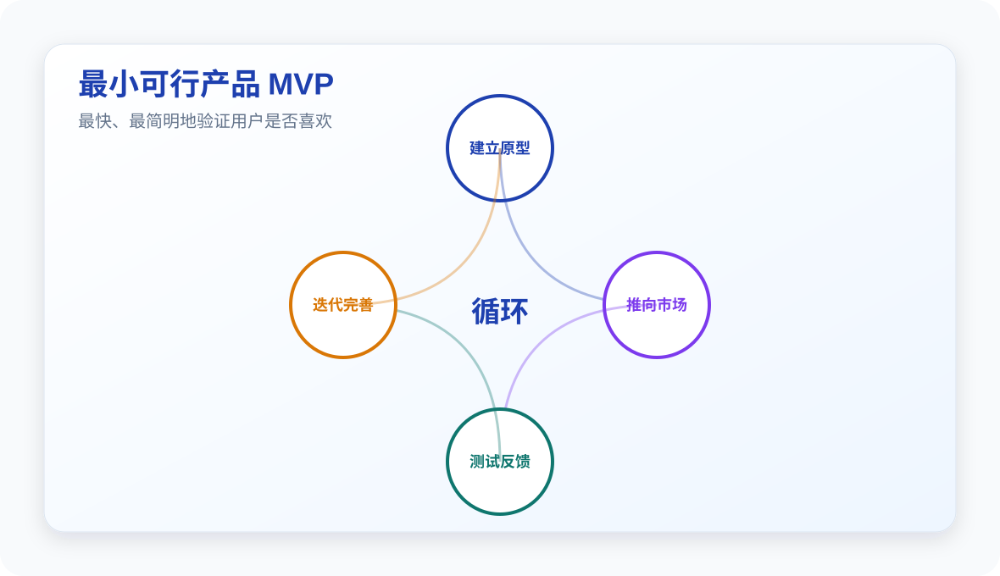
3. 峰终定律
峰终定律由美国心理字家丹尼尔 卡尔曼提出,他发现人们对一段经历的感受取决于两个时刻:
峰值(最好或最坏的时刻)和结尾。峰终定律被广泛应用于设计中。
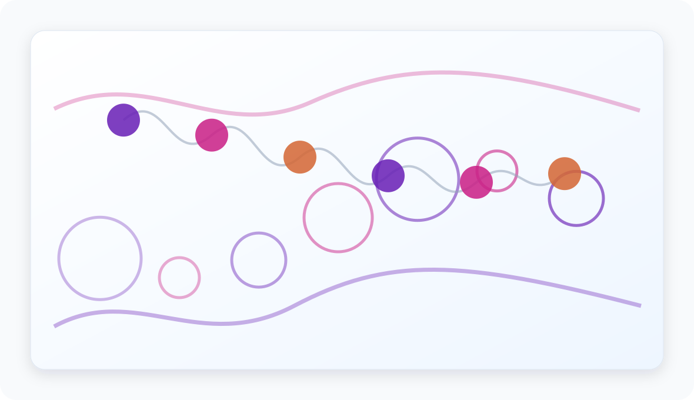
4. AARRR漏斗模型
AARRR模型是我们做用户分析的经典模型,是一个典型的漏斗结构。它从生命周期的⻆度,描述了用户进入平台需经历
的五个环节,最终获取商业价值。价值不仅直接源于用户购买行为(获取营收),还来自用户作为推荐者(自传播)和
内容产生者(留存率)所带来的营收。
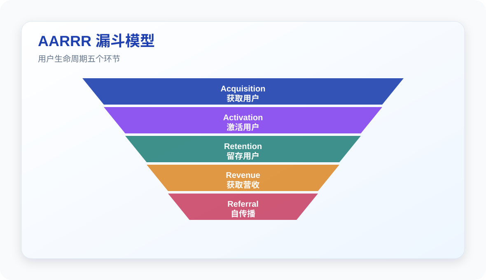
5. 上瘾模型
上瘾模型,即HOOK模型,由尼尔 埃亚尔、瑞安 胡佛在《上瘾》一书中提出,它本质是设计一套让用户连续循环的行
为模型,即触发→行动→多变的酬赏→投入,让用户在不知不觉中对产品上瘾,从而成为忠实用户。该模型用于产品设
计,养成或戒掉习惯。
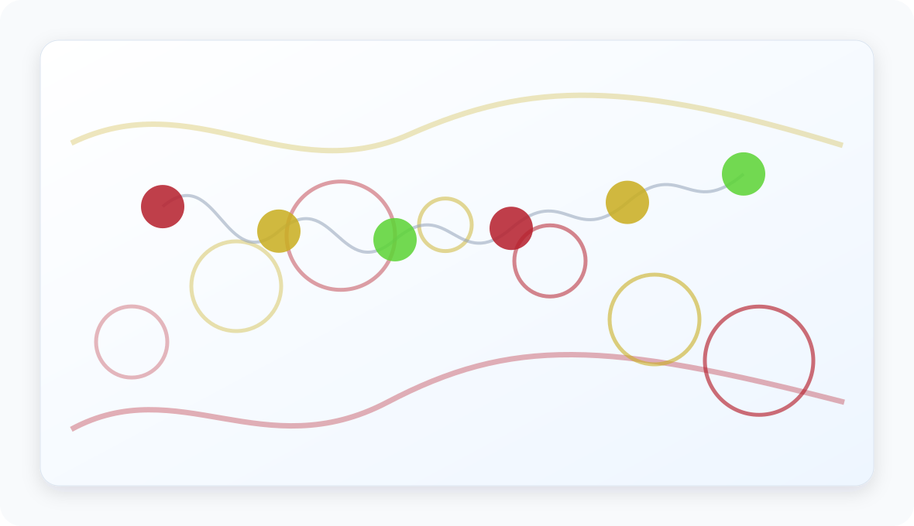
触发
外部触发通过将信息渗透在用户生活的各个方面来引导他们采取下一步行动。内部触发通过用户记忆存储中的各种关联
来提醒他们采取下一步行动。
行动
行动是人们在期待酬赏时的最直接的反应。对于人类行为受何种力量驱动,书中提到了来自斯坦福大学的福格行为模
型。
模型公式:B(行为) = M(动机) A(能力) T(触发)
要促成某种行为,触发、动机和能力这三者缺一不可。
而对用户来说,他们的动机越强烈,所耗费他们的能力越少,受到的触发越明显,则他们更有可能做出行为,即使
用产品。
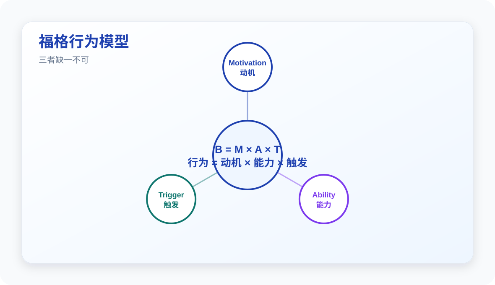
奖励
经科学研究表明,驱使我们采取行动的,并不是酬赏本身,而是渴望酬赏时产生的那份迫切需要。大脑因为渴望而形成
的紧张感会促使我们重复某个动作。
投入
《参与感》让用户自己去填充一些产品的空白,反而可以得到更好的收获。其理论基础在于:
我们总会高估自己的劳动成果,而且投入越多越热爱。如宜家效应,人们对自己组装的家具会产生一种非理性的喜
爱,从而给予家具更高的价值
我们总会尽力和过去的行为保持一致,过去的行为可以清晰准确地预知我们未来的行为,所以让客户投入付出的一
小步,会带来对产品的喜爱及今后更多的付出
五、共情能力
1. 五大圈层模型
想深入了解一个人,可以从五个圈层思考,由外向内,层层递进。
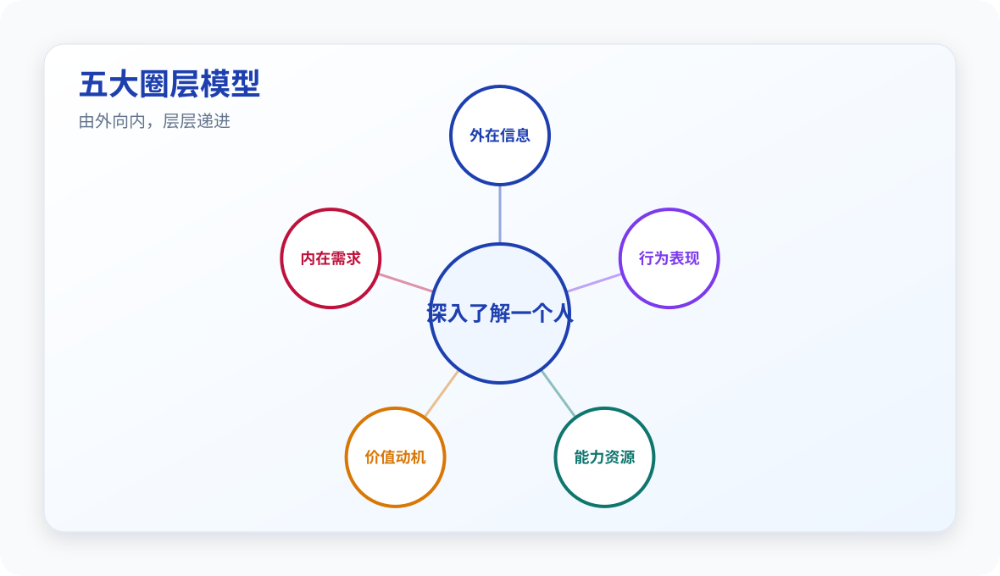
2. 情绪ABC模型
拆解事实- 情绪 - 价值
我们听到的一切都是一个观点,不是事实,
我们看见的一切都是一个视角,不是真相。
—《沉思录》
生活中的10%是由发生在你身上的事情组成,
而另外的90%则是由你对所发生的事情如何反应所决定。
— 费斯汀格法则
There is nothing either good or bad, but thinking makes it so. — 莎士比亚
视⻆
尼采视角主义:事实有没有所谓的“客观性”,其实取决于人们对这件事有没有“共同视角”。
“客观”只是一种错觉。但这种错觉很重要,因为我们需要一些稳定的事实认知。
我们越是运用更多的眼睛、不同的眼睛去观察同一个东西,我们对这个东西的“概念” 就越“完
整”。
我们也能越 “客观”。— 尼采《道德的谱系》
只懂一个国家的人不懂得任何国家 — 福山
投射看别人和自己的投射 | 查看自己的阴影面和不接纳的部分防止重复
你眼中的你不是你,别人眼中的你也不是你,你眼中的别人才是真正的你。— 萨特《想象.自由》
价值
我们一直是以自己赋予现实的意义来感受现实,
我们所感受的不是现实本身,而是现实被我们所赋予的意义,
或者说是我们的感受是我们自己对现实的解释。
— 《自卑与超越》
空
应无所住,而生其心。 —《金刚经》 无我相、无人相、无众生相、无寿者相
无善无恶心之体,有善有恶意之动,知善知恶是良知,为善去恶是格物。对立统一
实事求是!
情绪ABC模型是由美国心理字家Albert Ellis创建的。
A(Activating event) 指事情的前因
C(Consequence) 指事情的后果
B(Beliefs) 在因到果之间,存在一座桥梁,它就是我们的信念和对情境的评价
同一情境之下(A),不同的人的理念以及评价与解释不同(B1和B2),所以会得到不同结果(C1和C2)。
想法需要验证才能证明是否是事实
B是可以完全掌控和改变的因素
看待问题要多样化,多看看好的方面,避免错误归因
发现自己只关注事物负面的时候,提醒自己换个⻆度思考,多考虑正面的⻆度,并且记录下来,慢慢通过锻炼让自
己变得越来越理性。非SR(刺激-反应)模型
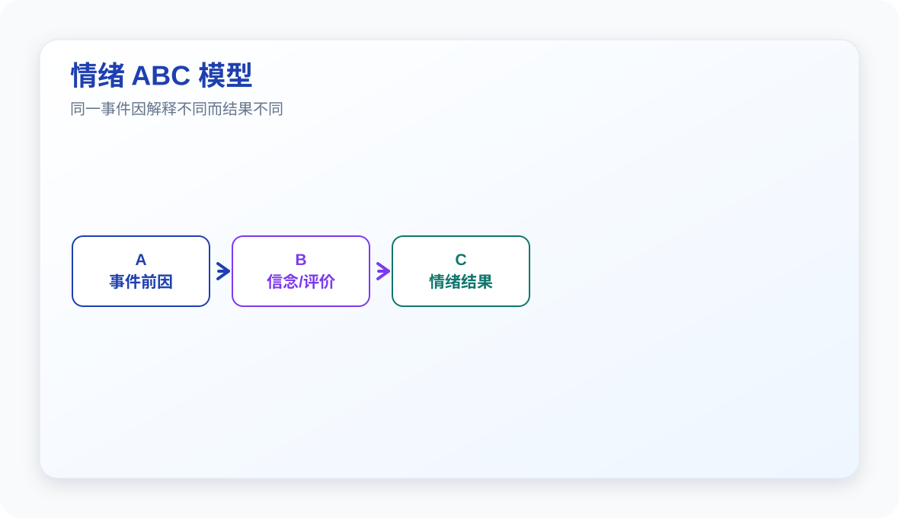
事实:独立与人的判断的客观存在
观点:你对一个事实的看法,与事实相比,观点和你自身关系更加密切;观点是你对一个事实的看法,如有人信中
医,有人不信中医,并将彼此视为异类,只是这是他们的观点,而他们认为是‘事实’。而事实有真假,观点无对
错。
立场:就是被位置和利益影响的观点;如辩论赛正反双方,不争对错,只争输赢,正反互换,仍然可以吵得不可开
交。立场不一样时,做法: 描述事实 -> 肯定动机 -> 表达善意 -> 给出建议
信仰:一套完全自洽的逻辑体系。信仰都是对的,因为你无法证明它是错的,逻辑自洽,但信仰内部虽然自洽,信
仰之间却相互矛盾。每个人都有自己的信仰,不要攻击别人的信仰。你不可能获胜,还可能会失去这个朋友。同
时,我们也要时刻反省自己,我说的话,我的表述,是事实、观点、还是立场、信仰。
3. 乔哈里视窗
知道自己不知道知道别人不知道
乔哈里视窗(Johari Window)是一种关于沟通的技巧和理论,由乔瑟夫和哈里提出。可以解决信息孤岛问题。
视窗理论将人际沟通的信息比作一个窗子,它被分为4个区域:开放区、隐秘区、盲目区、未知区,
人的有效沟通就是这四个区域的有机融合。真正有效的沟通,只能在公开区进行,但往往沟通会陷入隐藏区,导致沟通
效果差。知道别人可能不知道。
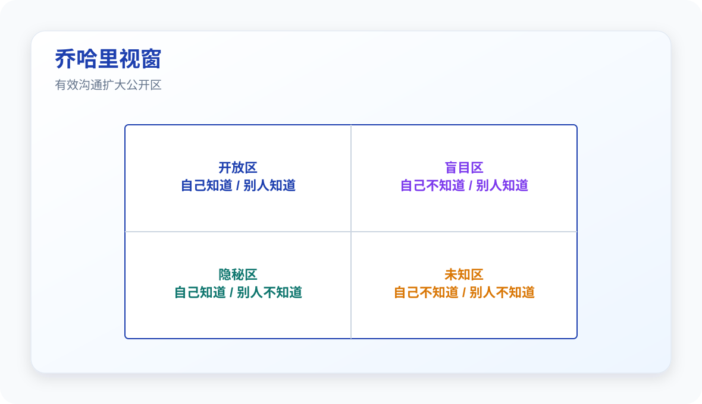
4. 高效倾听模型
soften。非语言的沟通技巧。t指声调。
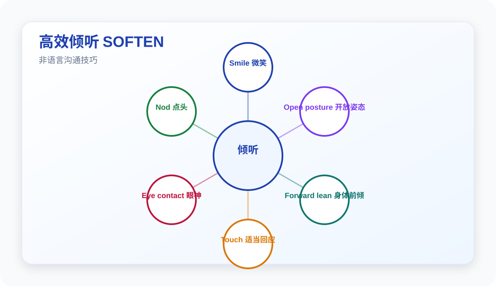
六、演讲能力
1. 故事五要素
讲好故事所必须的五大要素。
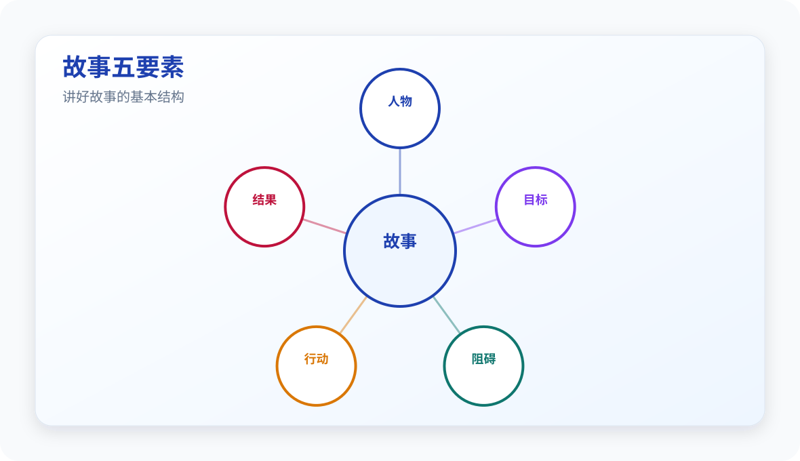
2. SCQA模型
SCQA模型是一个结构化表达工具,由⻨肯锡顾问芭芭拉 明拓在《金字塔原理》中提出。
SCQA由情景-冲突-疑问-答案四部分组成。对于如何有效清晰地完成一次演讲具有良好的辅助作用。
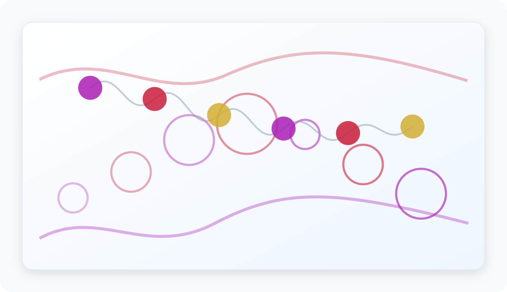
3. STAR模型
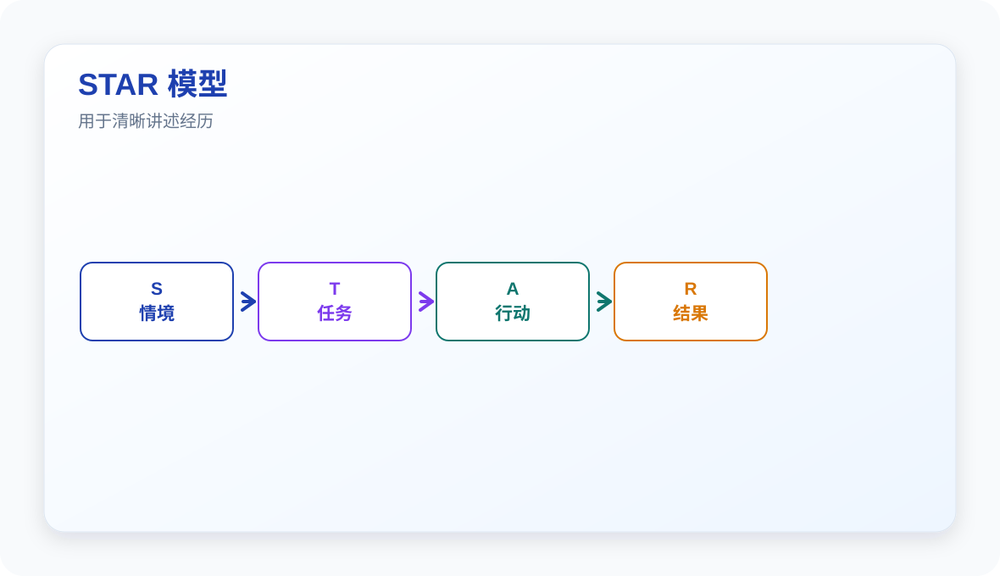
4. STORY模型
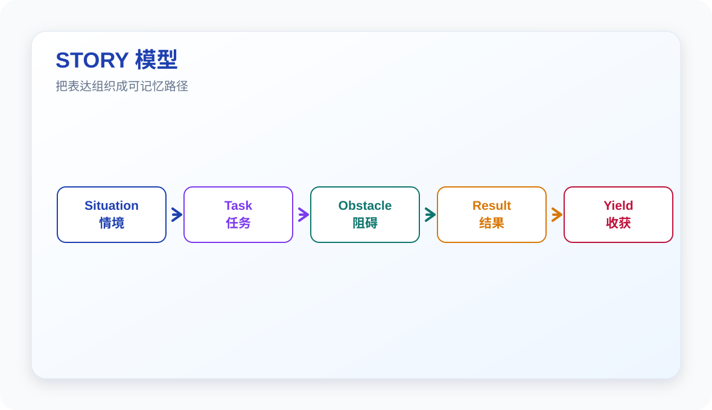
5. 英雄之旅 模型—好莱坞主⻆模板
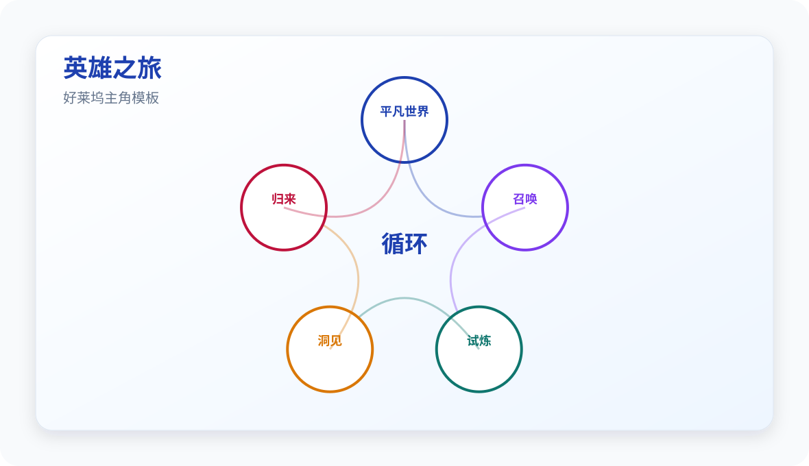
6 演讲
1.Focus on one major idea. 聚焦于一个主意
2.Give your listeners reasons to care. 给听众关注的理由
3.Build your idea with familiar concepts. 用听众熟悉的概念表述你的主意
4.Make your idea worth sharing. 让你的主意值得分享
七、整合能力
1. 杠杆思维
杠杆思维是用极小的成本撬动极大的资源,从而做到收益最大化。2-8原理,可迁移思维。
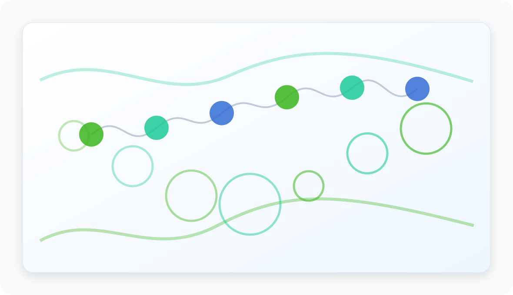
2. POA行动
POA行动力是张宁原创的。公式里的P指伙伴,O指目标,A指方法手段,POA指行动力。
根据这个公式,方法越有效,行动力就越强;伙伴越多,行动力就越快速;目标越小越聚焦,行动力就越强。
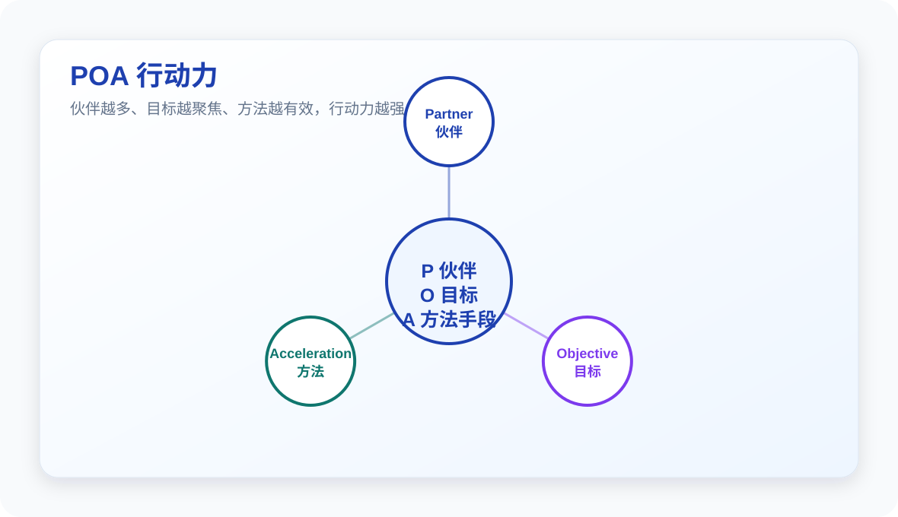
3. 系统思维
系统思维是指在考虑解决某一问题时,不是把它当做一个孤立、分割的问题来处理,而是当做一个有关联的系统来处
理。
筒单来说,就是对事情全面思考,不只就事论事。是把想要达到结果、实现该结果的过程、过程优化以及对未来的影响
等一系列的问题作为一个整体系统进行研究。
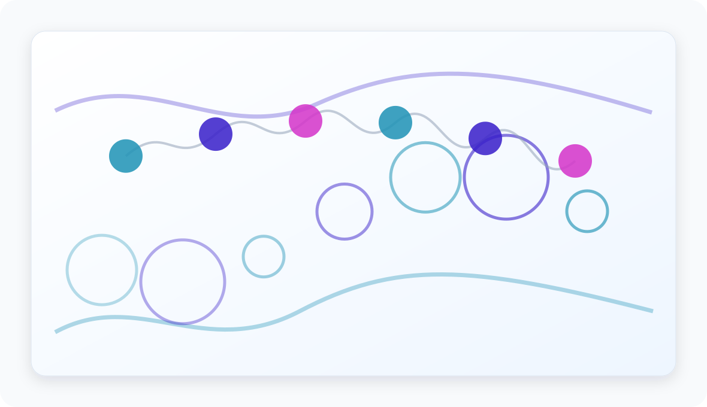
4. 多元思维模型
多元思维模型是一个收集和处理信息,并依照信息行动的框架。它完美合了多个学科的分析方法和公式,包历史、心理
学、生物字、工程学、物理学、化字等等。
这个想法来自查理 芒格,思维模型是你大脑中做决策的工具箱。你的工具箱越多,你就越能做出最正确的决策。
多元思维模型:如何一秒就看透事物的本质?
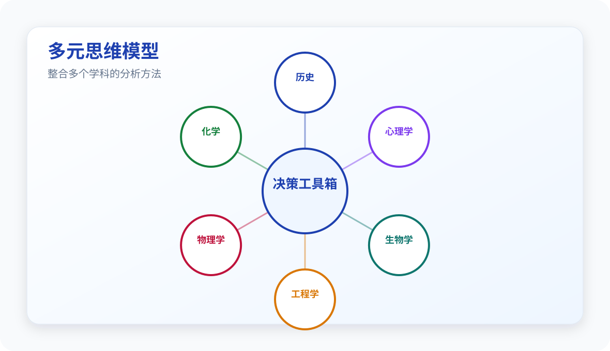
八、领导能力
1. 领导力梯队
来自《领导梯队》一书,概括了在大公司,从员工成⻓为首席执行官,需要经历的六个领导力发展阶段。
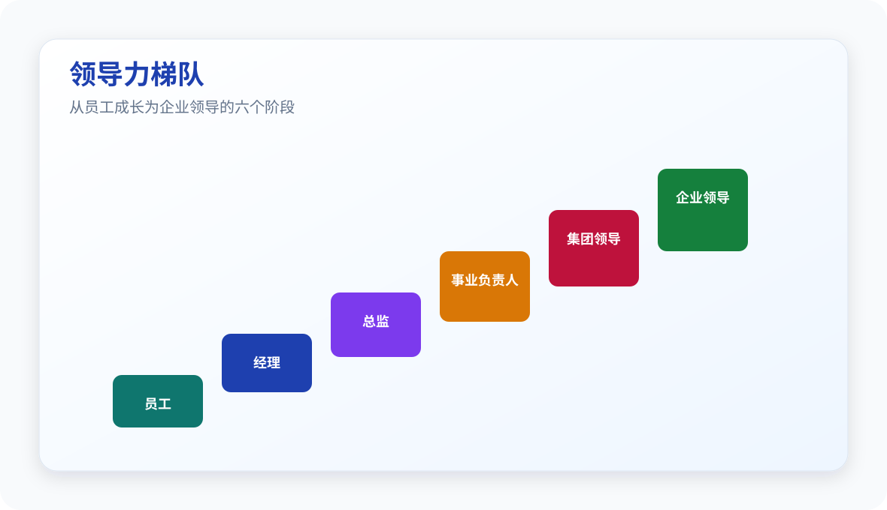
2. 情景领导力模型
情景领导理论最早由行为学家保罗 赫塞博士提出。领导力重点在于改变管理者自身。没有最好的领导形态,只有最适当
的领导形态。
基本假设:
领导的效能取决于下属或员工接纳领导者的程度。无论领导者的⻛格如何、领导者的行为如何,其效果最终是由下
属的行为决定的
领导者所处的情境随着下属的工作能力和意愿水平而变化
领导者应对下属的特征给予更多的关注和重视,根据下属的具体特征确定适宜的领导⻛格
三个过程: 诊断、弹性和约定领导形式
员工 根据员工能力和信心判断
领导
任务/工作行为:向员工说明或示范要 做什么、 何时做、 如何做,对工作成果及时反馈。
关键词:构建(structure)、组织(organize)、教导(teach)和监督(supervise)
关系行为:赞扬、倾听、鼓励,以及让员工参与决策制定。
关键词:赞许(praise)、倾听(listen)、询问(ask)、解释(explain)和促进(facilitate)
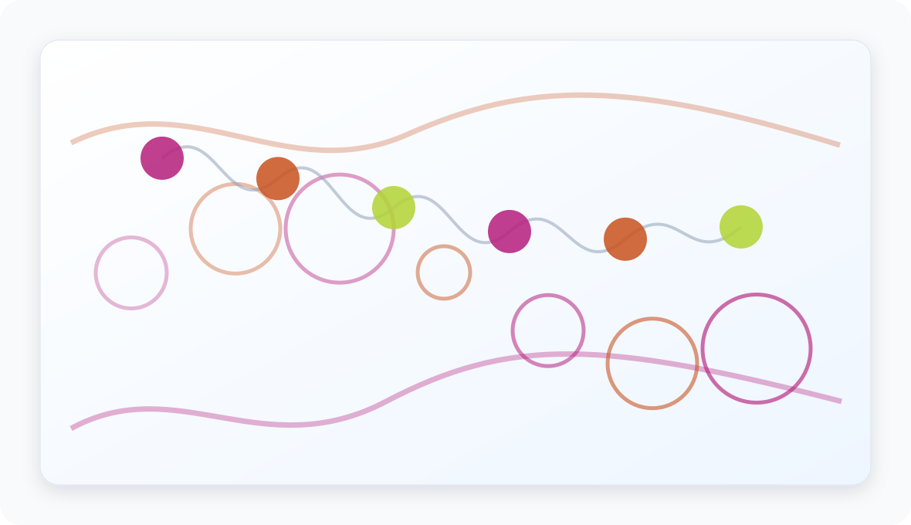
第一阶段:员工既没有能力也没有信心
领导者应采取告知式⻛格(Telling),提供明确的指导和近距离的监督
第二阶段:员工没有能力但有意愿并自信
领导者应采用推销式⻛格(Selling),指导性强,给予他们充分的支持和鼓励,同时允许试错并鼓励参与决策
第三阶段:员工有能力但没有意愿或不安
领导者应采取参与式⻛格(Participating),鼓励员工自主决策并按照自己的方式做事
第四阶段:员工既有能力也有意愿并自信
领导者应采用授权式⻛格(Delegating),让员工自己决策并执行任务,领导者只需进行监控和考察
3. GROW教练模型 - 约定领导形式
GROW模型是约翰 惠特默在《高绩效教练》一书中提出的教练方法,可以帮助员工成⻓。
G(Goal setting):明确目标。也包含在日常工作生活中的单一事件性目标
R(Reality Check):确定现状。要搞清楚目前的现状、客观事实是什么;寻找动因
O(Options):寻找方案。
W(Way Forward):制定计划和评审时间
GROW模型的分析与运用
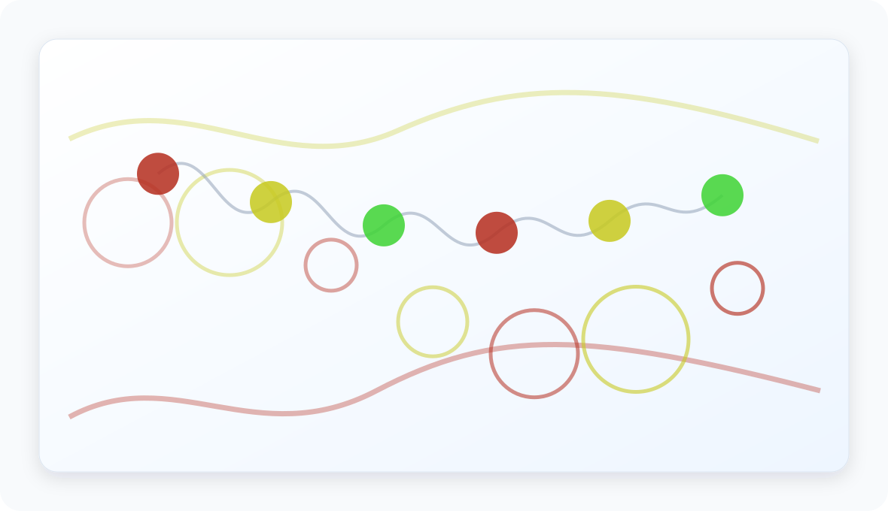
4. 领导力: 如何在组织中成就卓越
一书中提出的五项有效的领导力实践都有帮助:
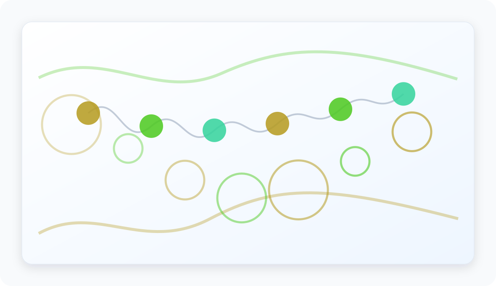
5 管理4C模型
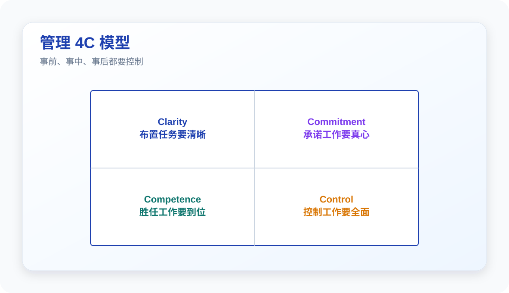
四个方法分别是:
布置任务要清晰(Clarity):确保员工100%理解工作。反复确认
承诺工作要真心(Commitment):领导对员工发自内心的承诺
胜任工作要到位(Competence):选择不仅有能力,还有态度的员工做工作
控制工作要全面(Control):事前、事中、事后的控制